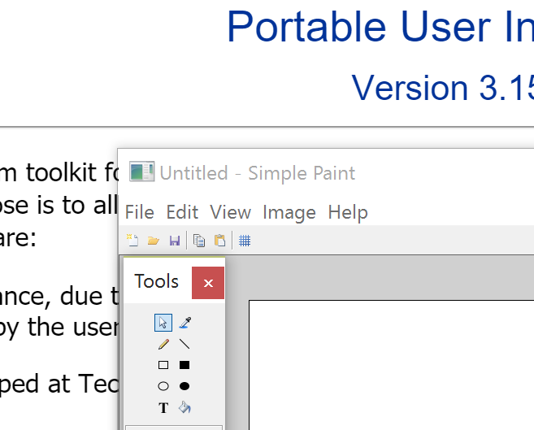
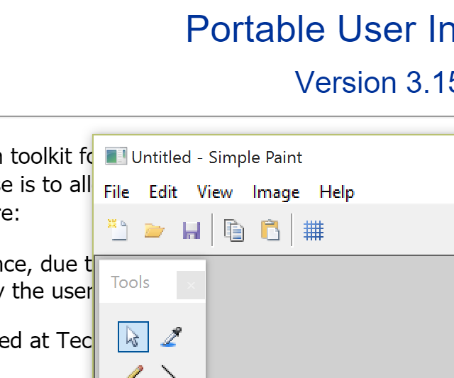
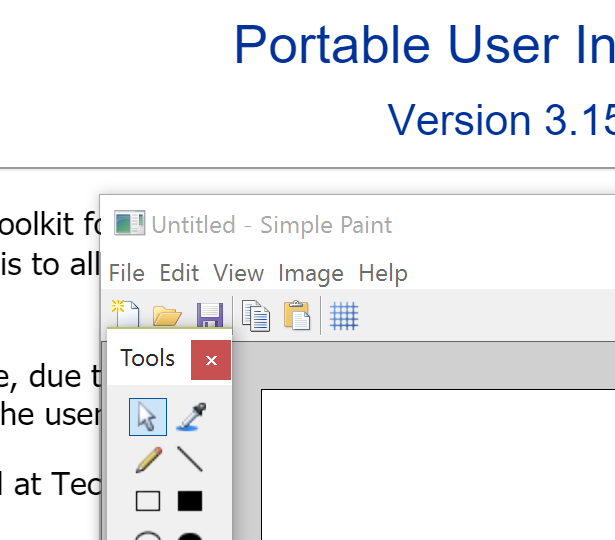
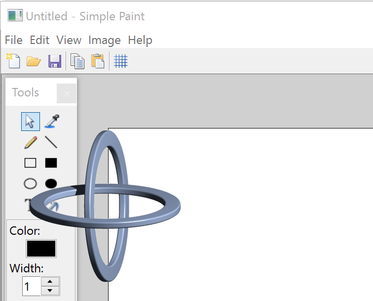
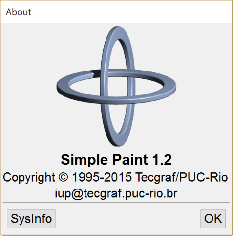

[in C] simple_paint.c
[in C] simple_paint.c As you recall from chapter 4, our Simple Paint source code now has 2500 lines. It is a lot to process, specially if you are looking for bugs, or learning how it works without reading all the previous examples that evolved into the final code. So it is time to use some software engineering techniques to improve quality and maintenance. We can do that in C too, but modern applications are more and more using C++, also because the language provides some tools to easy that task. So the first thing we are going to do is to convert the code from C to C++.
Actually if you simply save the "simple_paint.c" as "simple_paint.cpp", and use a C++ compiler it will fully work. But it is not what we meant. We would like to isolate parts of the code to reduce the interference of one part in another. This is called encapsulation in software engeneering. The simplest way to do that in C++ is to use classes for major features in the application. So looking at our code we can see at least 3 groups of functions: the main dialog, the toolbox dialog, and file management.
So we decided to start with 3 classes: SimplePaint (the main dialog), SimplePaintToolbox (the toolkbox dialog) and SimplePaintFile (file management). If you compare the C and the C++ codes they are very similar, except that functions are now class methods. Even IUP callbacks are now methods, but there is a catch here. Class methods can NOT be used as function pointers as the ones used by IupSetCallback. It order to be able to do that we must implement a static method, use it as the callback, and from inside that code call a class method. To do that every time for all the callbacks can be very task consuming. So we created a few macros to help implementing callbacks as class methods.
These macros are available in the "iup_class_cbs.hpp" include file. To use the macros for the callbacks you must call the IUP_CLASS_INITCALLBACK(ih, class) macro once, usually in the class constructor after the IUP dialog was created. This macro will register the IUP element so the class object can be retrieved later transparently for the application. The macros however can be called in any order. So we will use the IUP_CLASS_DECLARECALLBACK_*(class, callback) macros to declare the callbacks as methods. Since we have several different callbacks because of the different parameters, there are several different macros, one for each callback signature found in IUP elements. The static method has the same name of the callback used in the macro with a "CB_" prefix. So you can also directly use its name in IupSetCallback if necessary. To actually set the callback of an element simply call IUP_CLASS_SETCALLBACK(ih, name, callback) just like you call IupSetCallback. The callback name will be the same you used in IUP_CLASS_DECLARECALLBACK_*(class, callback), in fact it will simply call IupSetCallback with the static callback using the "CB_" prefix. So here is a simple class to illustrate this procedure:
class SampleClass
{
int sample_count;
public:
SampleClass()
{
sample_count = 0;
Ihandle* button = IupButton("Inc", NULL);
// 2) Associate the callback with the button
IUP_CLASS_SETCALLBACK(button, "ACTION", ButtonAction);
Ihandle* dialog = IupDialog(button);
// 1) Register this object as a callback receiver (only once)
IUP_CLASS_INITCALLBACK(dialog, SampleClass);
IupShow(dialog);
};
protected:
// 3) Declare the callback as a member function
IUP_CLASS_DECLARECALLBACK_IFn(SampleClass, ButtonAction);
};
// 4) Define the callback as a member function
int SampleClass::ButtonAction(Ihandle*)
{
sample_count++;
return IUP_DEFAULT;
}
Using these macros methods of the same C++ class can be set as callbacks for any element. For clarity we are going to use a single class to process the callbacks of all elements that are children of the same dialog. So we will need 2 classes for our 2 dialogs. The third class will handle only the image file management and it will not have callbacks. To be able to isolate the toolbox from the main dialog class we will need some extra methods that will operate over the toolbox dialog. Apart from that all the methods of both dialog classes are directly equivalent of a function in our C source code. We also tried to maintain their position in the source code to simplify the comparison between the two.
Notice that only a few methods are left public in both classes, that is where the encapsulation occurs.
Example Source Code
[in C++] simple_paint1.cpp
[in C] simple_paint.c
In the previous section we purposely left all classes in the same file so you will be able to compare it with the C source code. But now is the time to split the code in several modules, one for each class. So instead of a 2500 lines file, we now reduce to 1000 lines for the main file (where the main dialog is) and the rest distributed in the other files.
But we actually were able to create a total of 6 modules! 3 modules for the classes we already described, and 3 new modules. The 3 modules we already expect are: "simple_paint.cpp/h" (SimplePaint class), "simple_paint_toolbox.cpp/h" (SimplePaintToolbox class) and "simple_paint_file.cpp/h" (SimplePaintFile class).
The first new module is a very simple one, called "simple_paint_main.cpp". It contains only the "main" function necessary for the application starting point.
The second new module is to store the utility functions that are not related to any specific classes. It is called "simple_paint_util.cpp/h".
And the third module is a new class that we identified mixed up with our SimplePaint class. Inside the main dialog we have a very important control that does the most important interface task that is to show the image and do the direct interaction defined by the toolbox. As you can guess now is the IupCanvas. It has several speciall callbacks and as we said is the essential tool for our paint interface. So it is a natural candidate for separate class we called SimplePaintCanvas. It will hide the canvas from the main dialog, and encapsulate all its features, mainly interaction and zoom control. It is called "simple_paint_canvas.cpp/h".
Now it is not just easier to find the part of the code you want to change, but it helps to reduce the interference in other modules of what you have just changed.
But notice that our modularization is still not perfect. Inside SimplePaintCanvas there are some references to controls that are located in the Statusbar.
The next stage will be to use Dynamic Dispatch, or in C++, virtual methods and inheritance to implement classes for the interactive tools to make it easier to add new tools.
Also our classes are instantiated just one time. What about adding support for editing multiple image files simultaneously, but instead of using the old Windows MDI concept to use a IupTabs to alternate between the files?
In Lua the changes would be very similar, using tables to isolate the code of each module.
So there are plenty of possibilities for improving our object oriented modeling. If you implement some of them, please let us know and share your code so we can add it to the tutorial.
Example Source Code (Implementation) [C++]
simple_paint.cpp
simple_paint_canvas.cpp
simple_paint_toolbox.cpp
simple_paint_file.cpp
simple_paint_util.cpp
Example Source Code (Declaration)
[C++]
simple_paint.h
simple_paint_canvas.h
simple_paint_toolbox.h
simple_paint_file.h
simple_paint_util.h
During the 90's the 15" monitors with 1024x768 pixels were the most popular graphic resolution was about 85 DPI. But that was a long time ago. Soon we started to see 19" monitors with 1280x1024 pixels and 92 DPI. Later the most popular are the 20" Full-HD wide screen monitors (16x9 at the same height as 19" standard 4:3 monitor) with 1920x1080 pixels and a resolution of about 96 DPI. Finally we got to the 4K wide screen monitors with 3840x2160 pixels. Even for a 24" wide screen monitor, the resolution 3840x2160 pixels is 186 DPI. It is a lot more than 96 DPI. For instance 16x16 pixels icons are very tiny. Here is an example using a browser page as reference:

To support such high resolution the application should be able to compute its layout using a larger font, and to include image sets for button when in high resolution. Usually this not occurs. IUP will automatically take care of the layout (considering that the application used SIZE, CMARGIN and CGAP, instead of RASTERSIZE, MARGIN and GAP), but images are commonly provided in one size only, our SimplePaint is no different. To compensate that Microsoft used a strategy in Windows that will do a low level resize of the application, so it can improve its readability in sacrifice of its resolution. So this is how our SimplePaint looks like with the resize strategy:

The IupCanvas will report a size that is actually smaller than the size on screen, because the application will be run as if in a Full-HD monitor, not using the available resolution. Notice that even the menu text is blurred. To avoid that we added a few lines to the Manifest file, declaring that we are a dpiAware application. So this was how we obtained the previous screen shoot with the small icons. Now that we know how to avoid the Microsoft resize strategy it is time to improve our application readability by our own.
We used in SimplePaint two sets of images, one from the IupImageLib stock images, and one created just for SimplePaint which are only 16x16 pixels. We actually don't have to worry about the stock images, because since IUP 3.16 they are automatically resized accordingly the screen resolution (to obtain the first screen shot, we also had to disable this feature). But the SimplePaint toolbox images only have 16x16 pixels. The solution would be to add new images with at 32x32 pixels that can be used in place of the 16x16 if the resolution is very high, for instance by checking the global attribute SCREENDPI being greater than 150 DPI and selecting 16x16 or 32x32 images. But IUP also provides an automatic resize for images using the same strategy that Microsoft does for the whole application. To do that we set the IMAGEAUTOSCALE global attribute to the "DPI" value. So all the images will be scaled accordingly. The result is the following:

Now we have the best of both worlds, high resolution with normal readability.
Sometimes the application take a long time to start up, maybe it has many things to initialize for instance. One common approach to distract the user while this initialization occurs is to use a Splash screen. It is a dialog shown while the application initializes that usually has a decorative purpose only. So many companies use it to show the application logo and/or the company logo as a marketing strategy. Although we can use a normal dialog to do that, this dialog will have no decorations and no controls inside. We are going to use a single image as contents, and a trick to show it with a transparent background. The trick is the OPACITYIMAGE attribute of the IupDialog, it will use the transparency of the image to create a mask for the dialog shape, so the dialog will be shown with a non rectangular area, on top of what's on the background.
But we would like that to take two moments, first when the logo is shown alone, and a second moment when the logo is shown with our application on the background, while it initializes. To control the timing we use an IupTimer set initially for 1 second, then hold the execution, and inside the timer callback restart the timer for another second but now letting the application initializes normally. The splash dialog will be automatically destroyed at the end of the second moment.
The image we chose is the Tecgraf logo with 317x317 pixel. It is a large image to convert it to a C source code and embed into the application executable just for the splash screen. So we are going to load it from its file during run time. We could directly use IM functions to do it, and use CD to draw it, but we don't need much control over the drawing this time, so a simpler way is to use the IupLoadImage utility function that loads a file and returns an IupImage ready for IUP controls. The problem is that we now have to distribute our application with the logo file, and in run time locate that file for loading. There are many strategies to do that, we decided that our logo will be located in the same folder of the executable or in the parent folder, so we use the global attribute "EXEFILENAME" that contains the executable file name with full path (notice that the main function argument "argv[0]" not always contains the full path). From it we extract the path where it is located so we can concatenate with the logo file name. If the file is not found the splash is simply not shown.
Example Source Code
[in C++] simple_paint_splash.cpp

So now that we have a handsome logo, why not to improve our About dialog too? The About dialog also has an important job to show the application version. Until now we didn't have a version number, but our SimplePaint is getting more complex every day, so we must be able to know which version we are running. If we count from the start, in chapter 4 we should have reached version 1.0. In chapter 5 we moved to C++ but didn't actually added new features, so it was version 1.1. So for our splash screen commemorative edition we will simply define it as version 1.2.
We also added some company information and a contact e-mail. In the screenshot bellow the sharp eye will notice a caret in front of the e-mail text. That's because it is not an IupLabel. It is an IupText without borders and with the same background of the dialog. We use it instead of a label so the user can select the text and copy to the clipboard to paste it somewhere else. Another option would be to use the IupLink element with the text "mailto:iup@tecgraf.puc-rio.br", this will invoke the system e-mail application when clicked.
Finally there is also a button for System Information that shows a pre-defined dialog called IupGetText with textual information about the current system that can also be copied to the clipboard for use in error report for instance. Notice that all the system information were obtained from IUP global attributes.

Here is a sample of the System Information text:
------- System Information ------- IUP 3.15 Copyright (C) 1994-2015 Tecgraf/PUC-Rio. System: Win10 System Version: 10.0.10240 (x64) Screen Size: 3840x2080 Screen Depth: 32 IM 3.9.1 Copyright (C) 1994-2015 Tecgraf/PUC-Rio. CD 5.8.2 Copyright (C) 1994-2015 Tecgraf/PUC-Rio.
Now it is time to distribute our application. There are many installation creation tools for Windows like Microsoft Windows Installer (Free - defines the MSI package format), Install Shield (Commercial), Nullsoft NSIS Installer (Free - own package format), Inno Setup (Free - own package format), and WiX toolset (Free - can produce MSI packages). Here is a simple comparison on StackOverflow: Free Install Wizard Software. In Linux it is very common to distribute only the source code, but this becomes more complex when it involves libraries that are not installed on the system, like IUP, CD and IM. To build distribution packages for Linux search for rpm and deb package formats on the Web.
But before creating and installer we need to define which files we will distribute.
When using static libraries to link our application, we simplify the deployment because everything is packed in a single file. But in link time we have to know all dependencies of all libraries we are using, and still this does not guaranties that some library will have an external dependecy. Use know we use 3 libraries IUP, CD and IM. The main IM library (im) depends on the Zlib library (zlib1), and must not forget the IM Image Processing library (im_processes ) that contains the functions we use in section 4.6. The CD main library (cd) depends on the FreeType library (freetype6) which in turn depends also on the Zlib library, finally the CD main library in Windows depends on the GDI (gdi32) and in Linux depends on the GDK and Cairo libraries. The main IUP library depends on GTK in Linux and USER (user32), Common Dialogs (comdlg32) and Common Controls (comctl32). To use IUP and CD together we need also the CD_IUP library (iupcd). To use IUP and IM together we need the IUP-IM Utilities library (iupim). And the IUP Image Library (iupimglib) for the stock images. So our actual link list will include:
iupimglib iupcd iup cd freetype6 im_process im zlib plus in Windows: comctl32 comdl32 user32 plus in Linux: gtk-x11-2.0 gdk-x11-2.0 gdk_pixbuf-2.0 pango-1.0 pangox-1.0 gobject-2.0 gmodule-2.0 glib-2.0
The executable takes longer to link and all exported functions of all static libraries must not have a single function with the same name. And they all must use the same C Run Time Library when compiled, mixing different run times can have unpredictable results and usually linker errors.
On the other hand, when using dynamic libraries things get more simpler when developing and carefully when distributing. This time we do not have to know all the dependencies, only the direct dependencies used by our own code. So when linking we will specify only the following libraries:
iupimglib iupcd iup cd im_process im
The executable will link much faster and there will be much less room for conflicts. If you keep the memory allocation and release isolated by each library, meaning what allocated in IUP is released by IUP, what's allocated in CD is released by CD, and so on, then there will be no C Run Time library memory problems, even when using libraries that were linked with different Run Time libraries (standard structures like FILE* are also non interchangeable). But now we have to include all those libraries and their dependencies in the distribution package. The fist time you build the distribution package is problematic because you have to make sure that you get everything you will need in a foreign system. In Windows a very useful application is the Dependency Walker (Free) or the newer Dependencies. It will list all the DLLs linked to the application and their respective dependencies (don't forget to include the C Run Time DLL too, usually "msvcrXX.dll"). In Linux you can use the "ldd" application, and in MacOSX the "otool" application, for that purpose, but they are more limited.
In Windows, when running an application that depends on DLL is quite simple, if you copy the DLLs to the same folder of the application the system will automatically locate the DLLs. There is no need to change the PATH or to copy the DLLs to the Windows/System folder. In Linux, if you do not copy the .so files to the system folder then you need to at least set an environment variable called LD_LIBRARY_PATH (DYLD_LIBRARY_PATH in MacOSX) to include the folder were the dynamic libraries are. For example:
export LD_LIBRARY_PATH=$LD_LIBRARY_PATH:/home/tecgraf/simple_paint
So we actually moved the problems from one place to another, although
it is still more interesting to work with dynamic libraries since they isolate a
library code from another, linker is faster, and individual updates to the
dynamic libraries are far more simple to deploy.
| Previous | Index | Next |